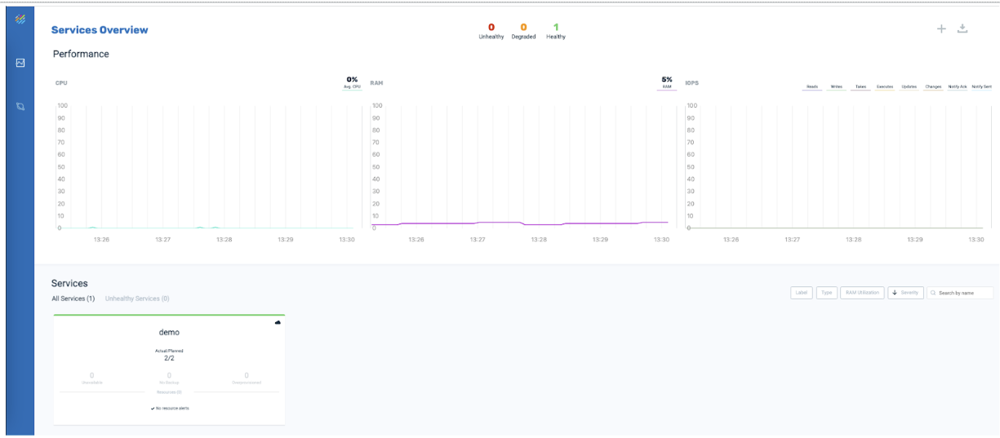

Deploy Multiple Partitions
Performance of the Kubernetes environment can be improved by allocating multiple partitions for a Space.
The steps to allocate multiple partitions for a Space are shown below. This example allocates two partitions for the demo Space.
-
Install
xapcharts.helm install xap ./xap/ --version= -
Wait for all pods to be ready.
Install the
demoSpace with two partitions.helm install demo ./xap-pu/ --set manager.name=xap,partitions=2Enter the command
kubectl get podsto see the result:You can also see the result in Ops Manager:

NAME READY STATUS RESTARTS AGE
demo-xap-pu-0 1/1 Running 0 44s
demo-xap-pu-1 1/1 Running 0 23s
xap-grafana-67d9b898b5-d5jn4 1/1 Running 0 2m27s
xap-influxdb-0 1/1 Running 0 2m27s
xap-operator-55c7997cd5-rt6bt 1/1 Running 0 2m27s
xap-xap-manager-0 1/1 Running 0 2m26sDeploy with High Availability
High availabilty deploys a backup partition that is in sync with the data in the primary partition. This eliminates downtime if the primary partition goes down, by seamlessly serving the same data from the backup. This example adds high availability to a Space called demo.
-
Undeploy the Space
helm delete demo -
Install helm charts
helm install xap ./xap/ --version=16.1.1 --set manager.resources.limits.memory=700Mi -
Wait for all pods to be ready.
-
Install the Space with high availability turned on.
helm install demo ./xap-pu/ --set manager.name=xap,partitions=1,ha=true -
Enter the command
kubectl get podsto see the result: NAME READY STATUS RESTARTS AGE demo-xap-pu-0 1/1 Running 0 44s demo-xap-pu-1 1/1 Running 0 23s xap-grafana-67d9b898b5-d5jn4 1/1 Running 0 2m27s xap-influxdb-0 1/1 Running 0 2m27s xap-operator-55c7997cd5-rt6bt 1/1 Running 0 2m27s xap-xap-manager-0 1/1 Running 0 2m26s-
In Ops Manager, click on the
demoservice to see the primary and backup instances.